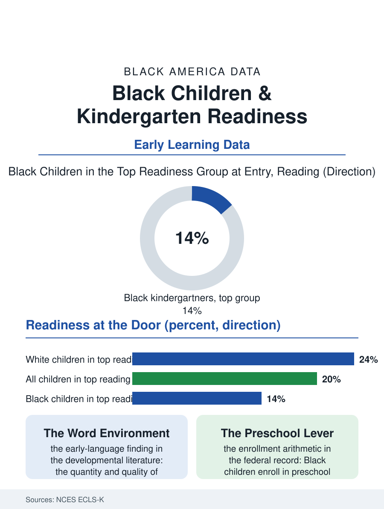

Black Education
Ready or Not: The Kindergarten Door
Children are assessed the month they meet school, and Black five-year-olds arrive with measurably less of what the assessments reward, a gap built before school begins. The readiness file.

School readiness is measured in the first weeks of kindergarten, when five-year-olds who have never met a classroom are assessed on letter knowledge, number sense, and the vocabulary of books. Black children arrive at that door with measurably less of what the assessment rewards, a gap documented in every federal early-childhood study, and the critical fact in the file is timing: the gap is present before school has had a single day to cause it. This article reads the readiness file.
What the Assessments Find
The Early Childhood Longitudinal Study, the federal government's long-running portrait of a kindergarten cohort, assesses children directly in the fall of entry and again each spring. Its fall findings sort children into readiness groups, and Black children are overrepresented in the lowest group and underrepresented in the highest in both reading and mathematics, with gaps on the order of a fraction of a standard deviation, the statistical unit that translates, roughly, into months of learning. The assessments also measure what surrounds the skills: approaches to learning, self-control, and social interaction, where the gaps are smaller and sometimes run the other way, a reminder that the readiness instrument measures a specific preparation, the preparation of households with books, time, and preschool tuition, more faithfully than it measures the child. Family data collected alongside the assessments name the correlates plainly: mother's education, household income, the number of children's books in the home, and whether the child attended center-based care, each predicting entry scores, each distributed unequally, none of them a property of the five-year-old being tested.
The Years Before the Door
Readiness is manufactured between birth and five, in the economy of talk, print, and care. The developmental literature's best-known finding concerns language exposure: children in professional households hear vastly more words, and more complex words, than children in households working multiple jobs with rotating caregivers, and vocabulary at five is the single strongest scaffold under the reading assessment. Print exposure compounds it: bedtime reading, library visits, and print in the home all register in the ECLS data. Child care arrangements form the third wall. Black families use relative and family care at high rates, arrangements rich in attachment and cultural knowledge that the readiness instrument does not score, and center-based preschool at rates that have historically been among the highest of any group, a fact the enrollment files confirm. Quality is the variable that decides whether that enrollment pays: the evaluations find that high-quality preschool narrows the entry gap substantially by the spring of kindergarten, while low-quality care merely warehouses the hours. Access to the high-quality end is rationed by price and geography, and the child care deserts mapped in the census files of this atlas overlap the readiness map with uncomfortable precision.
What Narrows the Gap
The hopeful page of the file is the spring assessment. The same federal studies that record the fall gap record Black children gaining ground across the kindergarten year at rates equal to or faster than their peers when instruction is strong, evidence that the gap is a preparation deficit, not a capacity one. The interventions with the strongest records are unglamorous and cumulative: pre-K programs with trained teachers and small classes, home-visiting programs that put books and coaching into the first three years, library systems that treat the toddler years as their core constituency, and kindergarten classrooms that build on what children bring instead of sorting by what they lack. Policy has begun to fund the front of the pipeline accordingly, through expanded pre-K, child care subsidies, and early-literacy programs aimed at the birth-to-five window. The readiness file closes with the ECLS's own longitudinal punchline: the fall gap, left alone, forecasts the third-grade reading gap and much of the later record in this atlas, which makes the kindergarten door the cheapest place in the entire education system to change the ending. The children are ready to learn. The data ask whether the years before the door will be funded like it matters, because by every measure in the file, they are where it is decided.
The measurement itself carries a final caution the researchers attach to their own work. Readiness assessments sample the skills schools are prepared to teach first, print knowledge and number sense, and they sample them in the school's language and formats, so a child raised in a rich oral tradition, in the call-and-response and storytelling fluency of a Black church and kitchen, can test as unready in the very domain, language, where her development is most advanced. The ECLS instruments partially correct for this by measuring social and self-regulation skills alongside academics, and there the entry gaps narrow considerably. None of this argues for ignoring the fall scores; the reading and math gaps forecast real later difficulty and deserve the funding response they are finally receiving. It argues for reading the file whole: a preparation gap, built by economics in the years before the door, sitting beside capacities the instrument was never built to see, in children whose spring gains keep proving the difference.
More in Black Education
Black Educational Attainment: High School Parity, the College Gap
About 89 percent of Black adults hold a high school diploma and one in four holds a bachelor's degree or higher — the attainment ladder, the college completion gap, and the generational trend.
Historically Black Colleges and Universities: Enrollment and Degrees
More than 100 HBCUs enroll roughly 290,000 students and award about one in six Black bachelor's degrees — an outsized share from a small sector. The federal education data.
Black College Enrollment: 2.4 Million Students
About 2.4 million Black students are enrolled in American colleges — nearly two-thirds of them women. The NCES enrollment data by sector, level, and trend.
Source: National Center for Education Statistics, Early Childhood Longitudinal Study (ECLS-K); U.S. Department of Education early learning data.